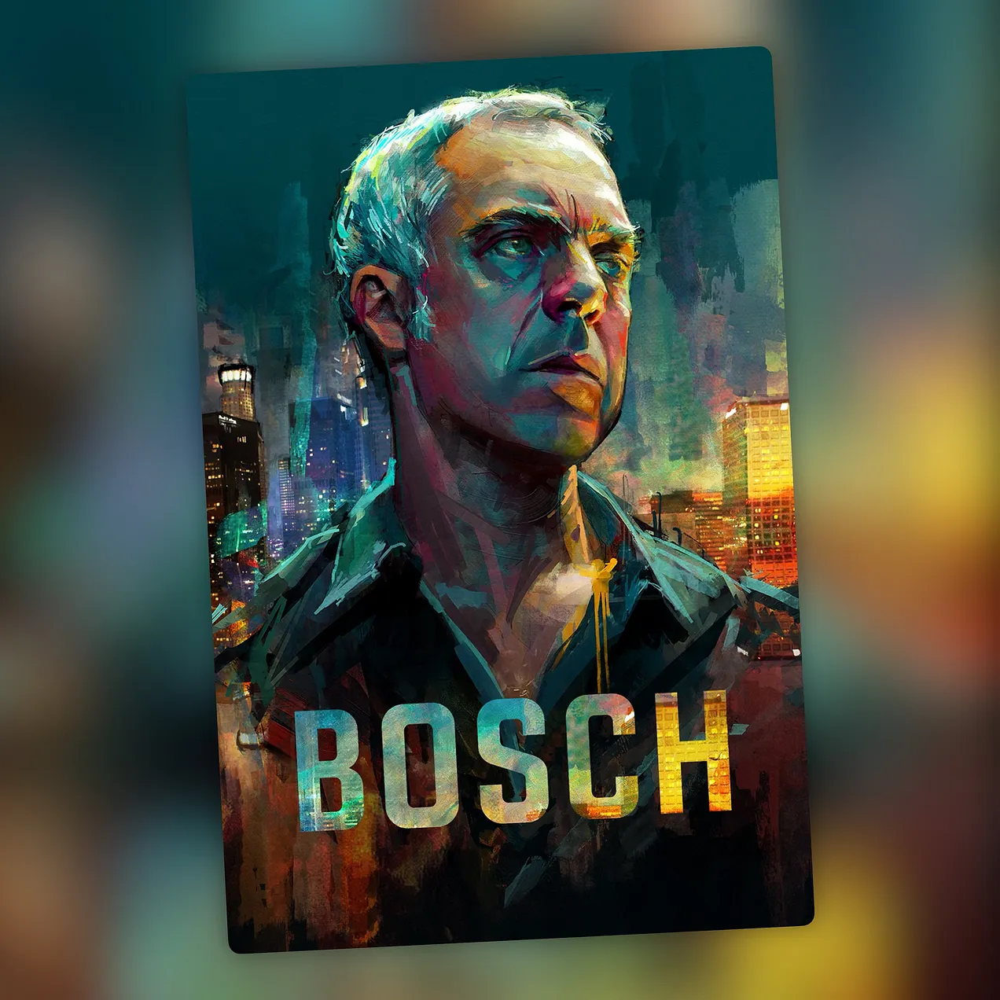

Bosch (2014-2021)
Jazz, crimen y ningún atajo

Bosch no recurre a golpes de efecto, ni a twists imposibles, ni a personajes que gritan sus emociones. Baja la voz, pone jazz de fondo y te arrastra igualmente.
Es novela negra pura hecha serie, oscura y sobria, que confía en que el espectador puede seguirle el ritmo sin que nadie le lleve de la mano.
Su protagonista, Hieronymus Bosch, es el detective clásico en su forma más esencial: terco, ético, obsesionado con la verdad hasta un punto que a veces roza la autodestrucción. No es un héroe fácil de querer. Es difícil, contradictorio y muchas veces incómodo, pero es imposible no respetarle. Titus Welliver lo hace con una intensidad contenida que ya quisieran muchos actores con más reconocimiento: dice más con una mirada que otros con un monólogo.
La serie está basada en las novelas de Michael Connelly y se nota el respeto por el material de origen. La adaptación sabe cuándo comprimir, cuándo expandir y cuándo dejar que la atmósfera haga su trabajo. La primera temporada, por ejemplo, junta tres novelas (Ciudad de huesos, Echo Park y La rubia de hormigón) en una sola historia. Parte de su encanto está en que no tiene prisa por contarte las cosas. Deja que los casos avancen, que los personajes se muevan por la ciudad y que el espectador vaya juntando las piezas.
Y luego están los secundarios, que aquí tienen bastante más importancia de la que podría parecer al principio. Lance Reddick y Jamie Hector, que ya conocía de The Wire, están muy bien y sus personajes tienen bastante peso en la historia. No están ahí para hacer bulto alrededor de Bosch. Tienen sus propias historias, sus problemas y sus relaciones con él, y eso hace que la serie tenga vida más allá de los casos.
Y no son los únicos. Amy Aquino como Grace Billets, Madison Lintz como Maddie o Annie Wersching como Julia Brasher consiguen que el mundo alrededor de Bosch tenga tanta importancia como el propio detective. La serie entiende que para que un personaje tan obsesivo funcione necesitas gente alrededor que choque con él, lo cuestione o simplemente intente seguirle el ritmo.
También me gusta cómo Bosch utiliza Los Ángeles. Como en los libros, no es simplemente el lugar donde ocurren los asesinatos. La ciudad forma parte del tono de la serie, desde sus calles y sus barrios hasta esa mezcla de lujo, corrupción y zonas mucho más oscuras. Es un Los Ángeles muy distinto al de otras series policíacas y encaja perfectamente con ese aire de novela negra que tiene desde el principio.
Siete temporadas sin que la serie desfallezca, pierda el foco o traicione lo que prometió desde el primer episodio. Incluso cuando los casos cambian, la serie mantiene la misma idea de fondo: Bosch va a seguir buscando la verdad aunque hacerlo le complique la vida, le enfrente a sus compañeros o le obligue a cruzar alguna línea.
Para quien le guste el buen noir, los detectives con principios que se doblan pero no se rompen y los casos que no se cierran con facilidad, Bosch es una apuesta segura.
Ficha técnica
- Título original: Bosch
- Creada por: Eric Overmyer
- Basada en: las novelas de Harry Bosch, de Michael Connelly
- Reparto principal: Titus Welliver, Jamie Hector, Amy Aquino, Lance Reddick, Annie Wersching, Madison Lintz
- Temporadas: 7 (68 episodios, 2014-2021)
- Plataforma(s) actual(es) en España: Amazon Prime Video